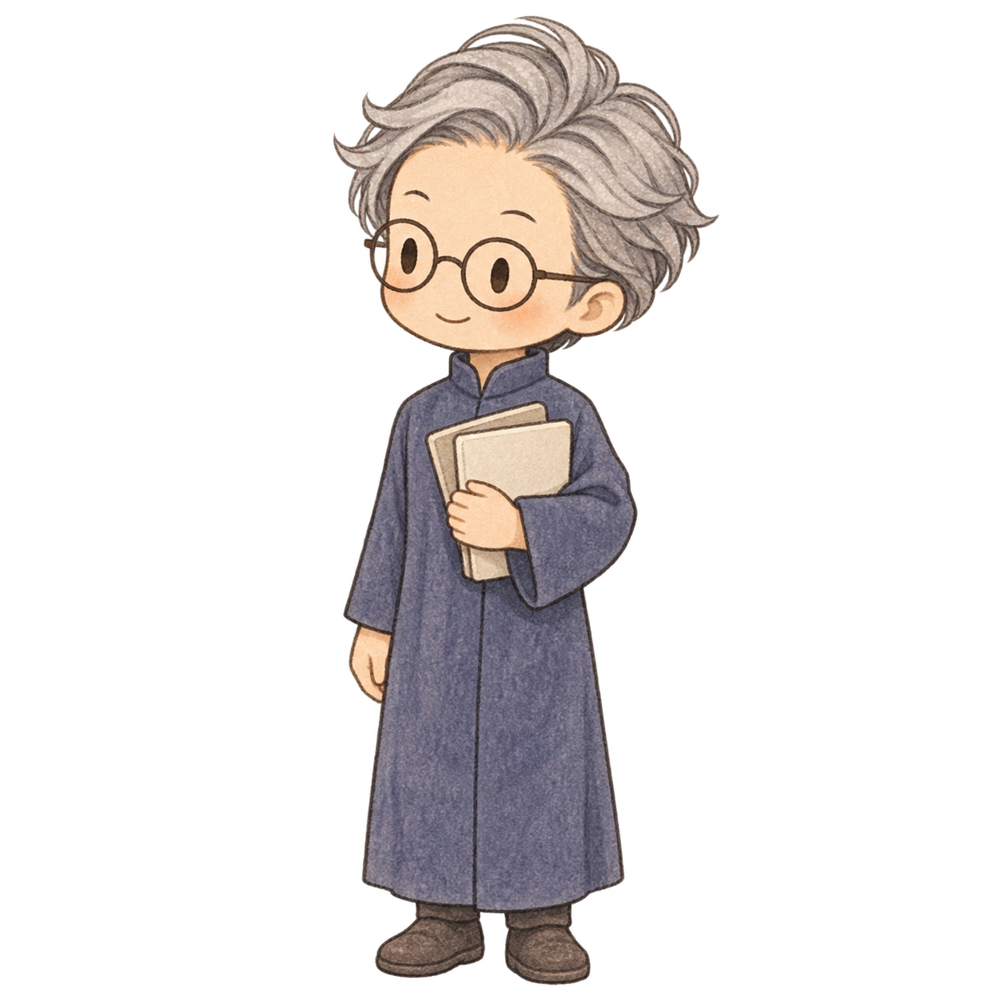

人間と AI で進める開発の全体像
スクラムを実践できるよう、役割とイベントを取り入れる

人間
ステークホルダー・PO
作る方向と判断を担う
対話して具体化する
GitHub Issue
作成・更新
開発可で着手

POAI
仕様・Issue に整理
成果の受け入れ確認
計画
開発者 → 開発チーム
→ 人間が承認
実装・検証
作って、確かめる
開発者どうしでレビュー
成果の確認
AI の PO が受け入れ確認
↓
人間が確認・採用判断
ふりかえり
開発チームが改善案
人間が採否を判断


開発者AI
計画・実装
検証・レビュー

開発チームAI
この流れ全体の進行・比較・完了を管理
結果を
申し送り
AI の PO：結果を受け取り、次の仕様・Issue へ反映
2